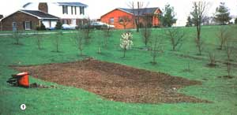

[1] Almost any urban (or suburban) lot has some space that can be worked into a fine garden, even on rock-ridden or sloping land. [2] As the garden begins to mature, regular fertilizing, weeding, and watering insure a beautiful addition to the landscape. [3] Old flowerbeds are excellent places for growing table delicacies like ... [4] Sugar Snap peas. Attractive as any row of roses: [5] lettuce and [6] squash.